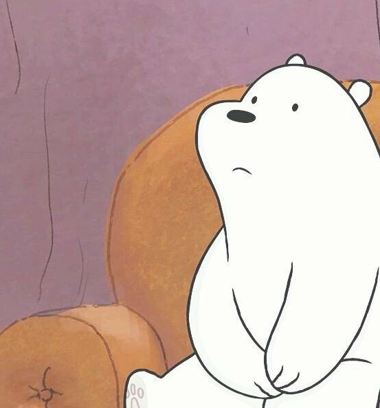

| COPILATION | |||
|---|---|---|---|
| Oso | El oso polar u oso blanco (Ursus maritimus) es una especie de mamífero carnívoro de la familia de los osos (Ursidae). | Es junto con su pariente, el oso Kodiak (Ursus arctos middendorffi), uno de los carnívoros terrestres más grandes de la Tierra. |  |
| Habitat | Los osos polares están clasificados como mamíferos marinos porque pasan la mayor parte de su vida en el hielo marino del océano Ártico. | Vive en el medio polar y zonas heladas del hemisferio norte. Es el único superdepredador del Ártico. | |
| Características | |||
| Alimentación | Advierte Ilya Mordvintsev, investigador del Instituto Severtsov para Problemas de Ecología y Evolución de Moscú. | ||
 ¿POR QUÉ SON IMPORTANTES?
¿POR QUÉ SON IMPORTANTES?
Los osos polares se encuentran en la parte superior de la cadena alimenticia y desempeñan un importante papel en la salud general del medio ambiente marino. Durante miles de años, los osos polares también han sido importantes para las culturas y las economías de las comunidades de la región.
Los osos polares dependen del hielo marino para su sobrevivencia y se ven directamente afectados por el cambio climático. Por eso estos animales son un indicador clave del estado de salud del Ártico.
Amenazas:
La pérdida de su hábitat, el hielo marino, debido al cambio climático, es la mayor amenaza para la supervivencia de los osos polares. Sin embargo también enfrentan otras amenazas como los conflictos con los humanos, la caza insostenible y los impactos generados por la industria.
A medida que el cambio climático está obligando a los osos polares a pasar más tiempo en tierra, éstos entran en contacto más a menudo con las comunidades de la región. Desafortunadamente estas interacciones a veces terminan mal para los humanos y los osos.
Muchas áreas del Ártico tienen un fuerte manejo y monitoreo de los osos polares. Pero existen algunos lugares donde la caza no sostenible parece estarse llevando a cabo, incluyendo la caza ilegal y no declarada.
Los científicos han dividido a la población total de osos polares en 19 unidades o subpoblaciones. De ellos, los últimos datos del Grupo de Especialistas en Osos Polares de la Unión Internacional para la Conservación de la Naturaleza (IUCN, por sus siglas en inglés) muestran que tres subpoblaciones están en declive y se estima que existe un alto riesgo de disminución a futuro debido al cambio climático.